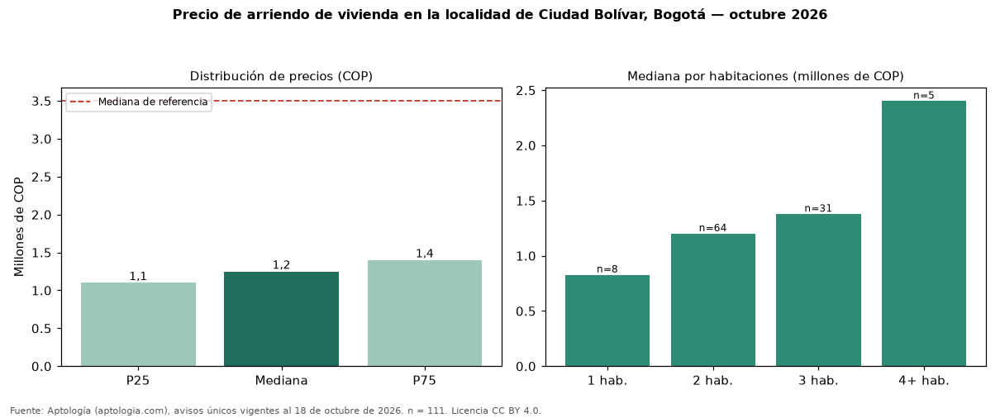

Precio de arriendo de vivienda en la localidad de Ciudad Bolívar, Bogotá — octubre 2026
Con 111 avisos únicos, el canon mediano de vivienda en arriendo en la localidad de Ciudad Bolívar, Bogotá es COP 1.250.000 al mes. Frente a toda la oferta de arriendo en Bogotá (COP 3.495.000), la diferencia es de 64 % por debajo. Por metro cuadrado, la mediana es COP 27.451/m² (−43 % frente a COP 48.571/m²), puesto 14 de 18 localidades comparables. Cruzando con la oferta de venta equivalente, la rentabilidad bruta implícita es 7,3 % anual. Por habitaciones: 1 habitación, COP 826.900 (n = 8); 2 habitaciones, COP 1.200.000 (n = 64); 3 habitaciones, COP 1.376.900 (n = 31); 4 o más habitaciones, COP 2.400.000 (n = 5). El área mediana es 43 m² (referencia: 70 m²). El estrato más frecuente es 3. Datos abiertos CC BY 4.0 de Aptología; fuente y búsqueda de inmuebles: https://www.aptologia.com/arriendo-zona/bogota/localidad-ciudad-bolivar. Archivos: PDF de 2 páginas, CSV con las cifras y gráfica PNG.

| Avisos únicos | 111 |
|---|---|
| Percentil 25 | COP 1.100.000 |
| Mediana | COP 1.250.000 |
| Percentil 75 | COP 1.400.000 |
| Mediana por m² | COP 27.450 |
Fuente: avisos vigentes de portales inmobiliarios recopilados por Aptología, deduplicados (mínimo 30 avisos únicos por celda). Precios pedidos, no cerrados. Fecha: 2026-10-18.